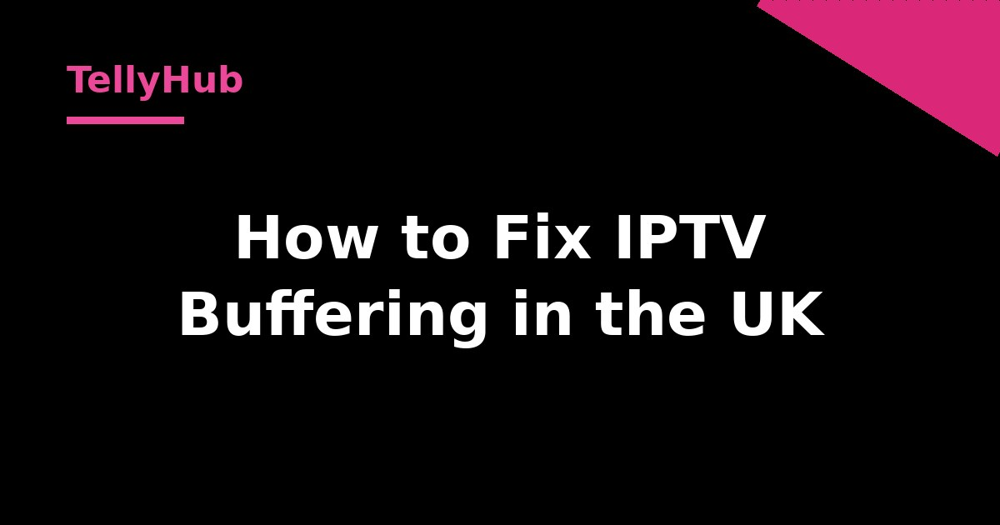

Work out whether the wobble comes from Wi-Fi, the device or the stream.
Start with the connection
Run a speed test on the device itself. A strong headline speed elsewhere in the house does not prove the Firestick has the same connection.
As a rough guide, allow around 10 Mbps of steady bandwidth for HD and 25 Mbps or more for 4K. The key word is steady: a connection that spikes and dips will buffer even when the average looks fine.
Reduce Wi-Fi congestion
Move the router into the open, pause large downloads and try the 5 GHz network. Walls, fish tanks, thick furniture and a router buried in a cupboard all weaken the signal.
Ethernet is ideal where it is practical. A wired connection removes most Wi-Fi variables in one move, and it is the first thing worth trying for a television that always buffers at the same time of day.
Refresh the app
Close the player fully, clear its cache and restart the device. Avoid clearing app data unless you have the login details ready to enter again, because a full data clear usually signs you out.
Check whether the player or the Firestick itself has a pending update. Outdated apps can misbehave after a service change, and a quick update often settles it.
Check one channel against another
If every channel struggles, focus on the device or broadband. If only one stream is affected, report the exact channel and time to support.
Try the same channel at a different time of day. Evening congestion on a shared connection can look like a service fault, and a quieter time often tells you which it is.
When to ask for help
If you have tested the connection, refreshed the app and the problem follows every channel, message Blaster TV UK with your device model, the app name, your speed-test result and the time the buffering happens.
That detail lets support check the right things rather than guessing. Never send passwords in a support message.
Questions about this guide
No. It can come from Wi-Fi, the device, the app, or the stream itself. Testing one channel against another and testing at different times helps narrow it down.
Sometimes it helps if a provider is slowing video traffic, but a VPN can also slow things down. Try it as a test rather than assuming it is the answer.
Evening is when the most devices are online at once. Shared broadband, neighbours on the same cabinet and peak-time congestion can all show up after tea time.
Next steps
Check your setup during the 24-hour trial, then ask Blaster TV UK for help with the exact device and app you are using.